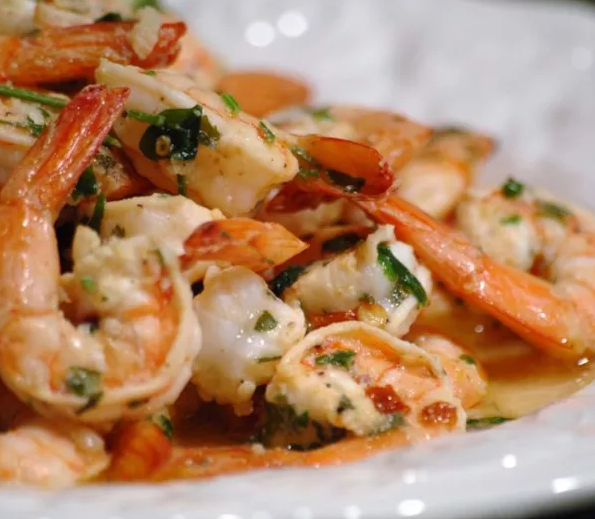

Grilled Shrimp Scampi

Description
Shrimp marinated in lemon, garlic, and parsley for 30 minutes, then grilled.
Can be used as an appetizer or main dish.
Ingredients
- 1/4 cup olive oil
- 1/4 cup lemon juice
- 3 tablespoons chopped fresh parsley
- 1 tablespoon minced garlic
- ground black pepper to taste
- 1/4 tablespoon crushed red pepper flakes to taste
- 1.5 pounds medium shrimp, peeled and deveined
Steps
- In a large, non-reactive bowl, stir together the olive oil, lemon juice, parsley, garlic, and black pepper.
- Season with crushed red pepper, if desired.
- Add shrimp, and toss to coat. Marinate in the refrigerator for 30 minutes.
- Preheat grill for high heat.
- Thread shrimp onto skewers, piercing once near the tail and once near the head.
- Lightly oil grill grate. Grill for 2 to 3 minutes per side, or until opaque.